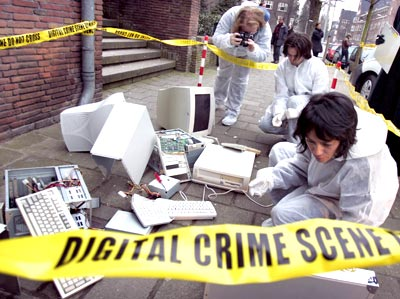

Está na fila para ser votado o Projeto de Lei (76/2000) que regulamenta o uso da internet no Brasil, e prevê as condutas que seriam objeto de processo criminal: A Lei dos Crimes Digitais, ou de Internet.
A proposta, que desde o ano de 2000 está sendo discutida vem passando despercebida dos usuários da grande rede de computadores, e pela pouca divulgação parece até que é uma lei secreta, sigilosa. E pelo pouco que pude constatar após pesquisa, a exemplo de outras leis penais, esta vem sendo elaborada por pessoas leigas no assunto, e o que era para ser de imensa importância para os brasileiros pode ter como fim mais "uma daquelas leis que não pegaram".
"Lei que não pega" realmente é cúmulo, se uma lei está em vigor, deve ser cumprida. Mas os devaneios de nossos deputados e senadores -alguns que enquadram-se na classificação "analfabetos funcionais"- está tendendo a criar mais uma aberração para complicar nosso trabalho, criar brechas para advogados espertos, e pior ainda, pretende mexer com alguns de nossos direitos. Para variar, estou tentando há algum tempo consultar o projeto de lei original no site da Câmara dos Deputados, mas o negócio foi feito mesmo para não funcionar, vive "indisponível temporariamente".
Mas o que tem de tão ruim no texto da lei proposta ?
Adianto que muita coisa, como a exigência da criação de uma espécie de "CPF digital", algo que identifique a pessoa que fez determinada coisa na internet, e imaginem quem terá que pagar por esse certificado ? Enfim, existem muitas falhas, a maioria devido aos parcos conhecimentos em software e hardware dos políticos e seus acessores, apesar de ter muita gente que entende tentando acertar os pontos e corrigir os erros, como o pessoal do Comitê Gestor da Internet. Além de criar responsabilidade para os usuários que involuntariamente propaguem "códigos maliciosos" pela rede, ou em outras palavras, se seu computador for infectado por um vírus, você também é responsável pelo bichinho, mesmo que não saiba que ele está aí.
O que interessa à analise por este site é a parte que determina regras para a investigação dos crimes, e os próprios crimes que a lei pretende conceituar.
O atentado começa quando a lei diz que técnicos e profissionais de informática podem invadir qualquer sistema se detectarem algum tipo de ameaça; isso inclui ler seus e-mails, invadir grupos de debates privados, invadir legalmente sua máquina, onde você digita sua senha do banco, opera no mercado de ações ou coisas desse tipo. Ah, o mais legal é que para isso não é necessário que exista uma investigação da Polícia Federal ou da Polícia Civil. Ele tem permissão legal de quebrar o sigilo e invadir sua privacidade simplesmente por achar que ali pode haver a ação de um hacker.
Todos os servidores das polícias judiciárias (Civil e Federal) sabem a dificuldade que é conseguir uma autorização judicial para fazer uma interceptação telefônica ou quebrar um sigilo bancário, são tantas proteções individuais que muitos crimes acabam ficando sem punição. Mas se for para invadir contas de e-mail, sistemas de dados sigilosos ou privados, aí não precisa investigar, não precisa do Juiz, é só dizer "Ah, acho que tem algum código de hacker por aqui..."
A mancada maior vem quando começam, para variar, a falar dos crimes e suas penas. Se um hacker invadir sua conta bancária pela internet hoje e retirar ou desviar seu dinheiro, ele será indiciado, dependendo das circunstâncias, por Furto ou Estelionato, com pena de até 8 anos de reclusão (§4º art. 155 CP). Já com a nova lei, o criminoso virtual ficaria com a singela pena de detenção de 1 a 2 anos. Ou seja, é mais jogo ser um criminoso que estudou e tem conhecimentos técnicos suficientes para roubar 1 bilhão do que ser um batedor de carteiras ou aquele pivete que pega seu telefone celular quando você se distrai e sai correndo. Outros crimes que pretendem ser criados também já existem em nosso ordenamento jurídico, só que as novas penas seriam mais brandas.
O projeto de lei está aí, prestes a ser aprovado, e fala sobre uma matéria imprescindível para o desenvolvimento do país, só que não estão sendo ouvidos muitas pessoas que entendem do ramo (vide críticas dos especialistas) e pode representar tão somente um retrocesso da internet no Brasil, e aumento da exclusão digital. Tomara que essa canoa vire, sejam feitos debates mais amplos e tenhamos uma lei decente, ao contrário das diversas pérolas que tratam dos temas penais.